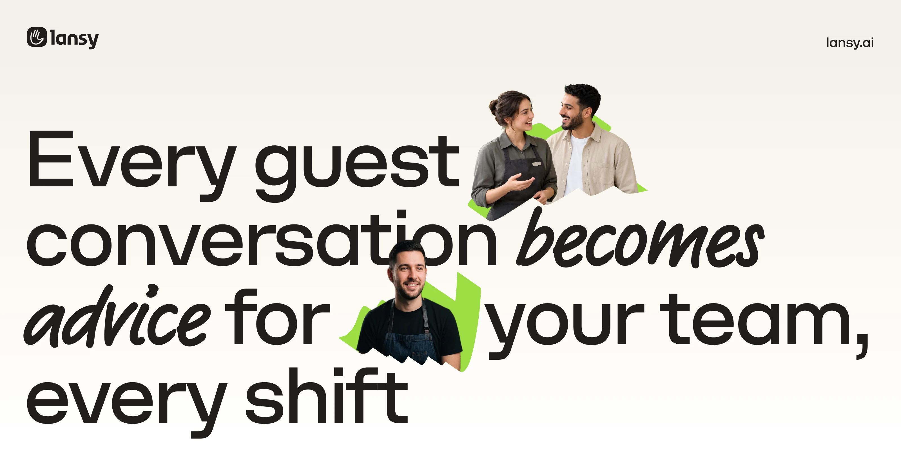
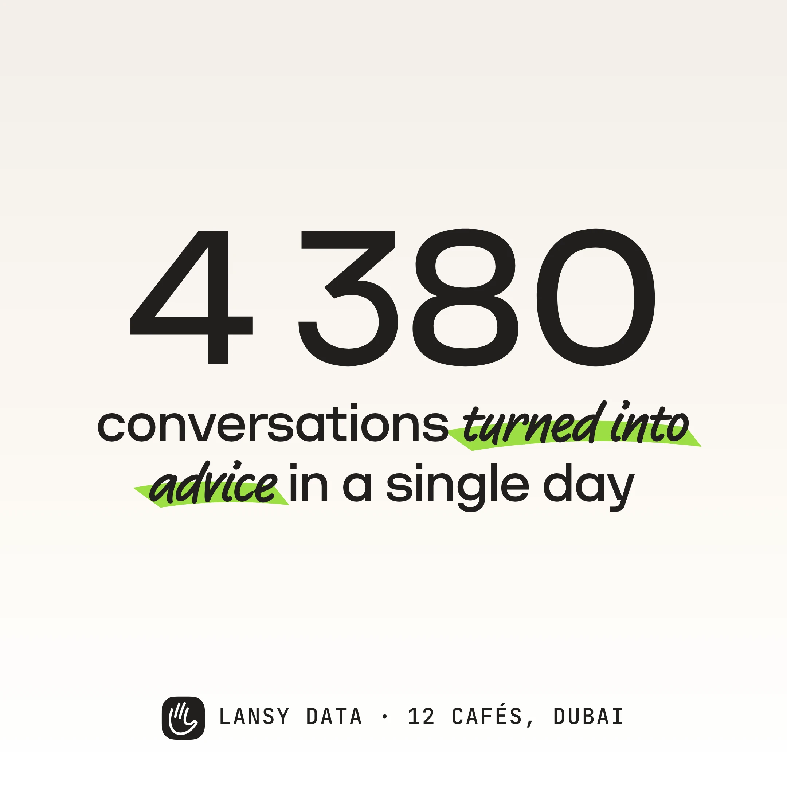
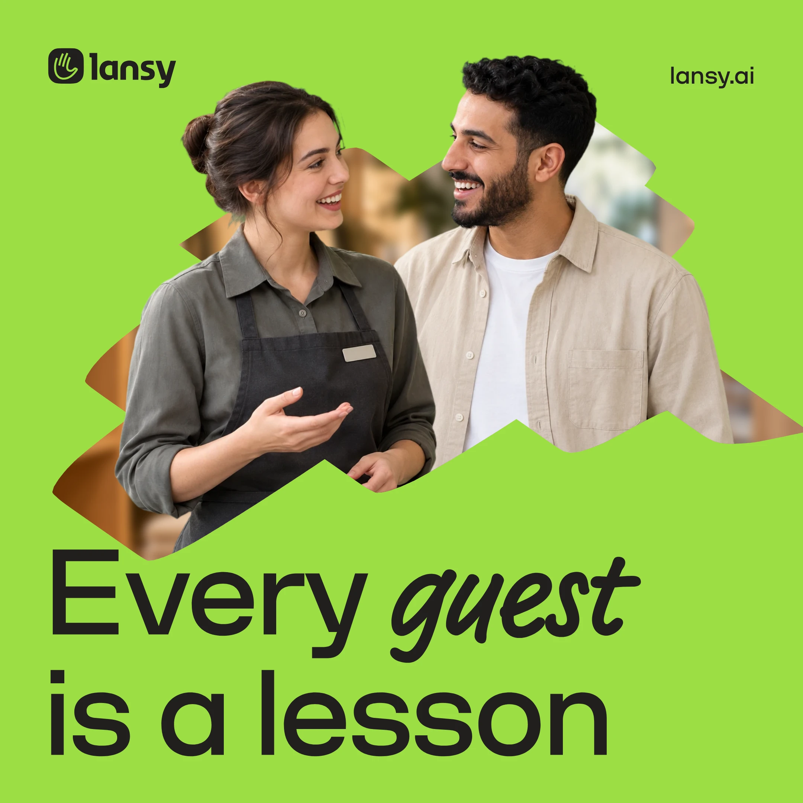
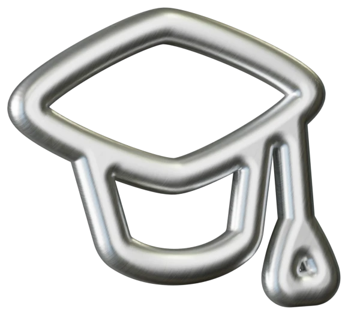
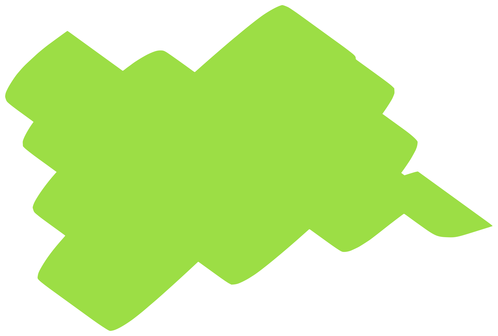
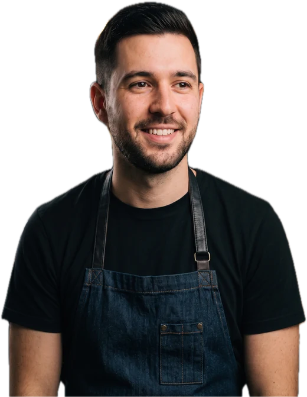
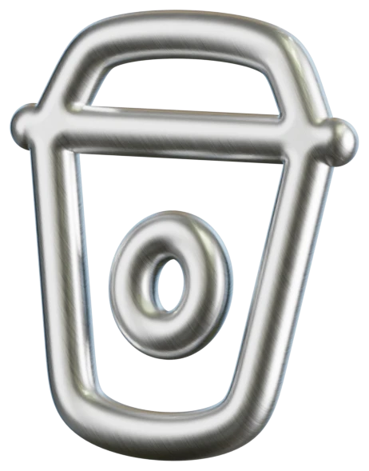
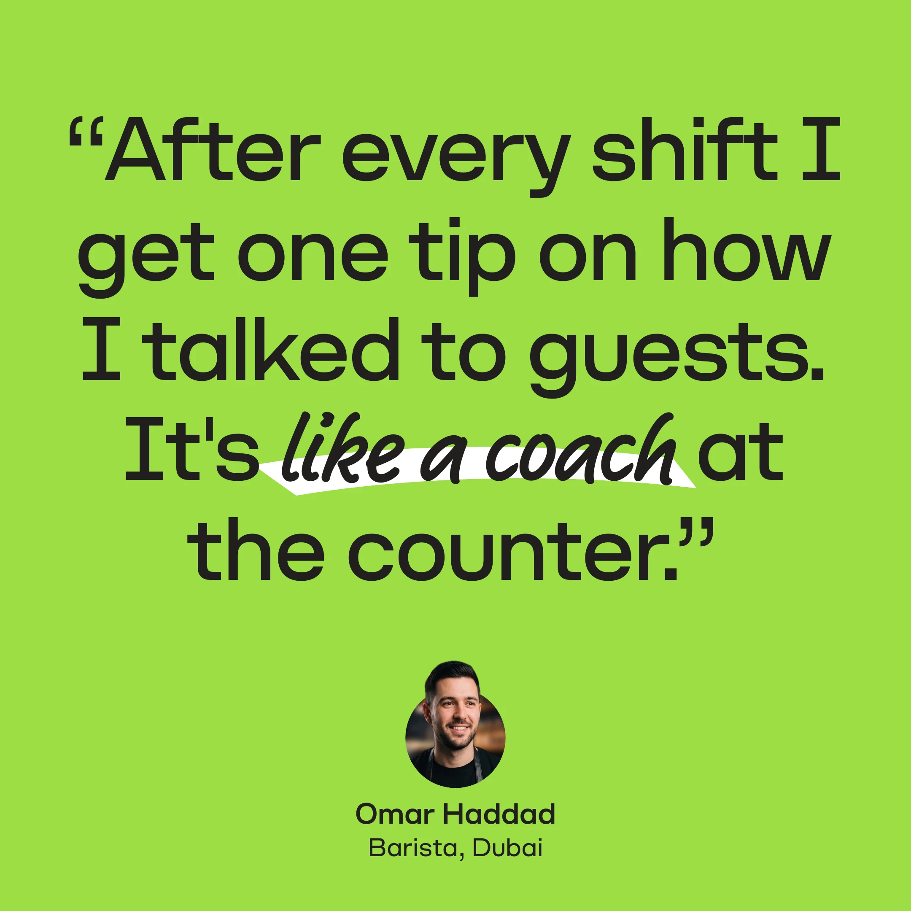
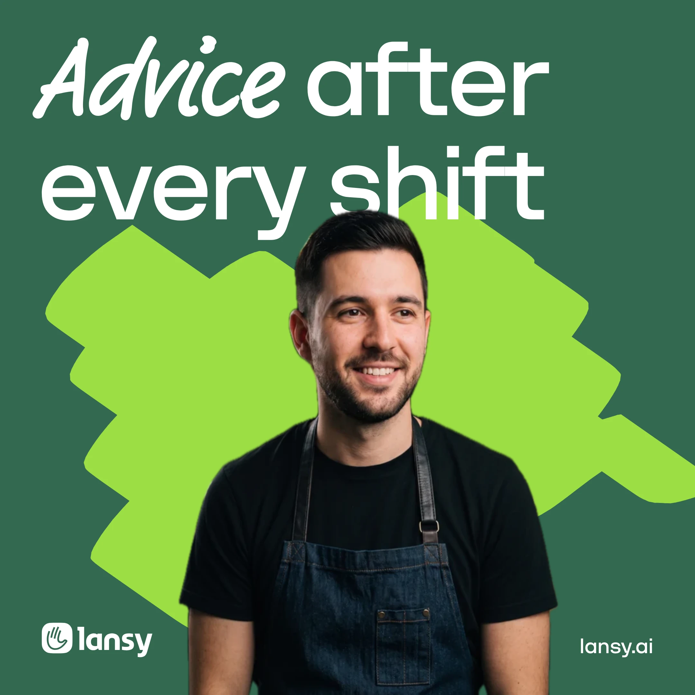

A coach
for every barista
After each shift, one tip from his own conversations at the counter.
Learn more ↗

Every order
becomes advice







Personal talk stays out
A call home, a chat on a break: removed before analysis.
Learn more ↗Voice stays with us
Audio never leaves our servers in the UAE. AI sees only anonymized text.
Learn more ↗The whole day, heard
From the morning rush to closing time, every conversation at the counter counts.
Learn more ↗